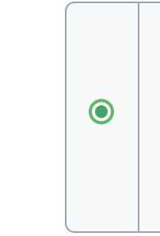

Example 4
Radio Button
Radio buttons are used through out to give user choices in their user journey through the application. These buttons are kept constant in terms of css but are used to create a lot of complex components.
Radio buttons are used through out to give user choices in their user journey through the application. These buttons are kept constant in terms of css but are used to create a lot of complex components.